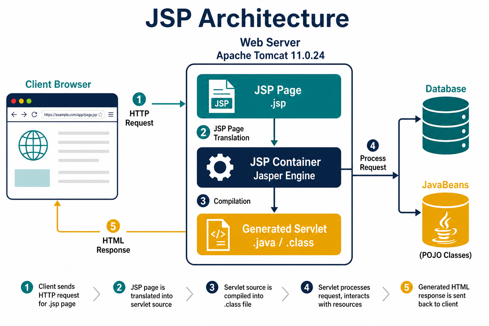
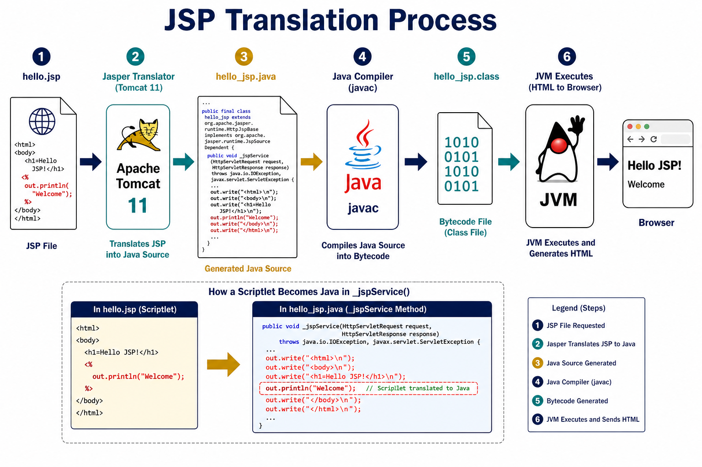
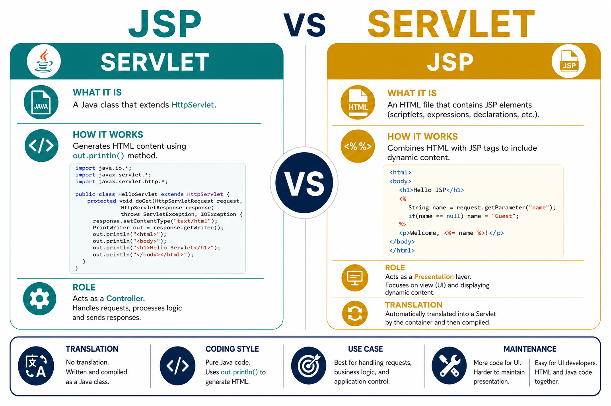
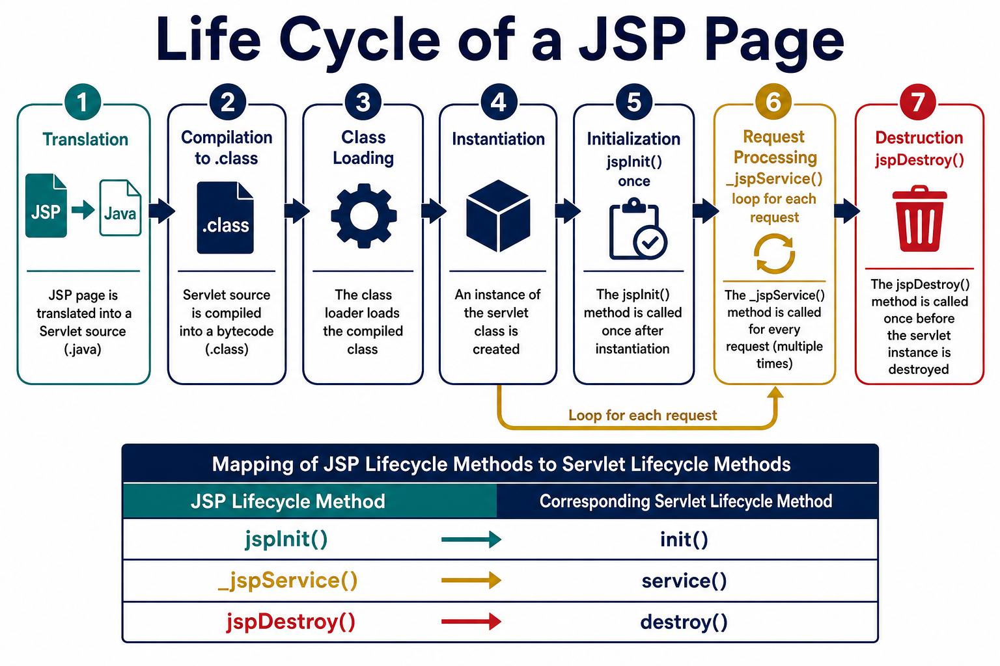
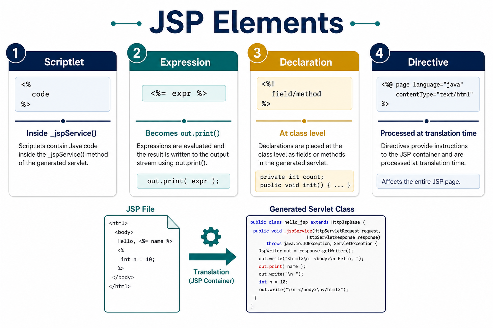
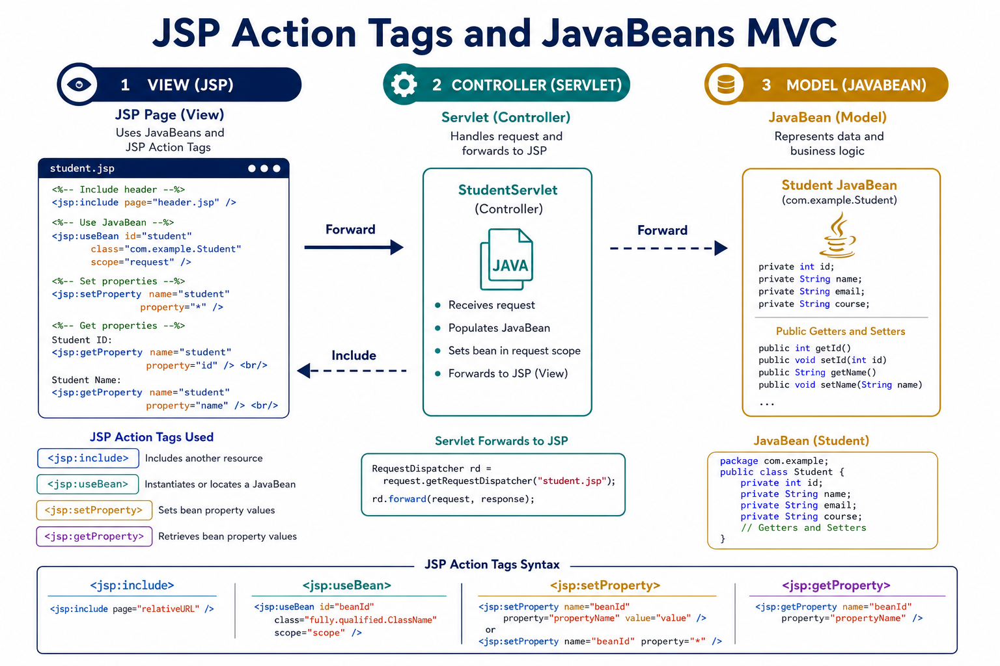
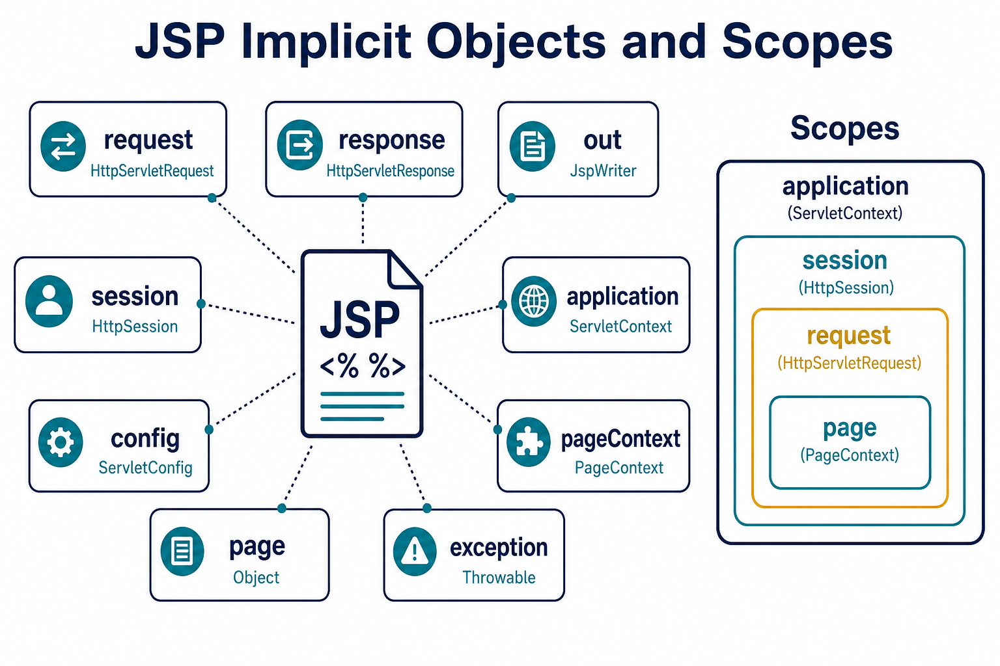
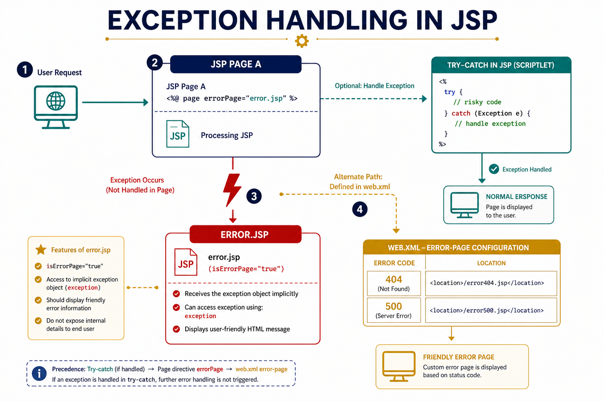

Java Server Pages — complete in-depth notes
Theory, syntax of every important API, translation-to-servlet view, diagrams, real applications, and runnable programs. Every lab has separate buttons: Trace (flow only), HTML form (type input), Source code (HTML form + JSP — both files), Deploy (HTML → JSP process + Tomcat steps), and Run online (HTML form first, then JSP executes after Submit).
Theory syllabus — all topics covered
Every section follows the same format: In simple words → Definition → Key points → Diagram explanation → tables, syntax & programs.
1. Introduction
What is JSP, features, architecture, request flow, pros & cons
2. JSP vs Servlet
Differences, when to use which, MVC roles
3. Life cycle
7 phases, jspInit, _jspService, jspDestroy
4. JSP elements
Scriptlet, expression, declaration, comments
5. Directives
page, include, taglib — all attributes
6. Tags & objects
Action tags, 9 implicit objects, JavaBeans
7. Exception handling
try-catch, errorPage, web.xml
8. Scopes & API
4 scopes, cookies, JDBC, EL
9. Real applications
E-commerce, banking, ERP, hospital
1. Introduction to Java Server Pages
In simple words
JSP lets you write a web page that looks like HTML, but you can add small pieces of Java inside it. When a user opens the page, the server runs the Java part, builds HTML, and sends it to the browser. The browser never runs Java — it only shows the final HTML.
Key points to remember
- JSP is a view technology — used to show HTML to the user.
- Every JSP file is converted into a servlet by the container.
- The file extension is .jsp (example:
hello.jsp). - JSP runs on the server, not in the browser.
- Tomcat uses Jasper as the JSP engine.
- JSP can use implicit objects like
request,session,outwithout creating them.
Java Server Pages (JSP) is a server-side technology used to create dynamic web pages. A JSP file looks like HTML, but it can contain Java code, directives and standard tags. The container (Tomcat, GlassFish, Jetty) translates the JSP into a servlet, compiles it, and then that servlet generates HTML for the browser.
1.1 Why JSP was introduced
Servlets are excellent controllers, but writing a full HTML page with out.println("<h1>...")
is painful to design and maintain. Designers cannot easily edit Java classes. JSP reverses the idea:
HTML is the main file; Java is inserted only where dynamic behaviour is needed.
Presentation
JSP is the View in MVC. Product pages, result sheets, dashboards.
Productivity
Change a heading without recompiling by hand — the container recompiles the JSP.
Reuse
include, JavaBeans, tag libraries and JSTL keep business code out of the page.
1.2 Features of JSP
| Feature | Meaning |
|---|---|
| Built on servlets | Every JSP becomes a servlet. You get request, session, cookies, filters for free. |
| Automatic translation | First request (or precompile) generates _jsp.java then _jsp.class. |
| Implicit objects | request, response, out, session, application, config, pageContext, page, exception. |
| Directives & actions | page, include, taglib plus <jsp:useBean>, include, forward… |
| JavaBeans / EL / JSTL | Industry pages avoid scriptlets and use beans + Expression Language. |
| Tag files & custom tags | Reusable UI components (menus, date pickers, tables). |
| Error pages | Declarative exception handling with errorPage / web.xml. |
1.3 JSP architecture
The browser never executes Java. It only sends HTTP and receives HTML/CSS/JS. The JSP container (Jasper in Apache Tomcat) sits inside the servlet container.

Diagram explanation — Figure 1 (JSP architecture)
- Browser (client) — User opens a URL like
hello.jspand sends an HTTP request. - Web server / Tomcat — Receives the request and passes it to the JSP container.
- JSP container (Jasper) — Reads the
.jspfile, translates it to a servlet, and compiles it. - Generated servlet — Runs Java code, talks to JavaBeans or database if needed.
- HTML response — Servlet writes HTML using
outobject and sends it back to the browser. - Browser displays — User sees the final page. Java code never reaches the browser.
1.4 Request processing (what actually happens)
- Client requests
http://host:8080/app/hello.jsp. - If
hello.jspwas never translated, Jasper createshello_jsp.java. - Java compiler produces
hello_jsp.class. Class is loaded and instantiated. jspInit()runs once. Then_jspService(request, response)runs for this request.- HTML is collected in a
JspWriterbuffer and returned as the HTTP response. - Later requests skip translation unless the
.jspfile timestamp changed.

Diagram explanation — Figure 2 (Translation pipeline)
- Step 1 — JSP file — You write
hello.jspwith HTML and JSP tags. - Step 2 — Translation — Jasper creates
hello_jsp.java(a servlet source file). - Step 3 — Compilation — Java compiler creates
hello_jsp.class(bytecode). - Step 4 — Execution — Container calls
_jspService()method for each request. - Step 5 — Output — HTML is sent to the browser as HTTP response.
- Note: Translation happens only when the JSP is new or modified. After that, only the compiled class runs (faster).
1.5 Advantages and disadvantages
Advantages
- Faster UI development than pure servlets.
- Separation of static design and dynamic logic (especially with beans/JSTL).
- Portable across any servlet container.
- Access to entire Java ecosystem (JDBC, mail, JSON, etc.).
- Session tracking, cookies, filters, listeners already exist.
Disadvantages / cautions
- Heavy scriptlets make pages unreadable (avoid in production).
- First request is slower because of translation/compilation.
- Debugging generated servlet names is less obvious than a hand-written servlet.
- Mixing business logic in JSP breaks MVC and unit testing.
Hello JSP — first dynamic page
2. Difference between JSP and Servlet
In simple words
A servlet is a Java class that handles web requests. A JSP is a page file that becomes a servlet automatically. They do the same job inside Tomcat, but JSP is easier for writing HTML. In real projects: servlet = controller (logic), JSP = view (display).
HttpServlet and handles HTTP requests directly.
A JSP is a text page (.jsp) that the container converts into a servlet. Both run on the server and produce HTML.
Key points to remember
- Servlet = Java file (.java). JSP = page file (.jsp).
- Servlet uses
doGet()/doPost(). JSP uses_jspService()after translation. - Writing HTML in servlet = many
out.println()lines (hard to design). - Writing HTML in JSP = normal HTML with small Java pieces (easy to design).
- Both have the same performance after JSP is compiled.
- MVC pattern: Servlet → controller, JSP → view.
A servlet is a Java class that handles HTTP. A JSP is a document that becomes such a class. They are not rivals — they are layers. Industry practice: Servlet = controller, JSP = view.

Diagram explanation — Figure 3 (JSP vs Servlet)
- Left side (Servlet) — Programmer writes Java class. HTML is printed using
out.println(). - Right side (JSP) — Programmer writes HTML page. Java is added only where needed using tags.
- Same container — Both run inside Tomcat and use request, response, session objects.
- Same result — Browser receives HTML in both cases.
- Best practice — Use servlet for control logic; use JSP for showing data to the user.
| Point | Servlet | JSP |
|---|---|---|
| Nature | Java class extending HttpServlet | Text file with HTML + JSP tags (.jsp) |
| Coding style | Java with embedded HTML strings | HTML with embedded Java / tags |
| Who writes it | Java programmer | Page designer + programmer |
| Translation | You compile .java yourself | Container generates servlet automatically |
| Methods | doGet, doPost, service | jspInit, _jspService, jspDestroy |
| Implicit objects | You create PrintWriter out = response.getWriter() | ready-made out, session, … |
| Request protocol | You override doGet/doPost separately | _jspService handles GET and POST |
| MVC role | Controller / sometimes model glue | View (presentation) |
| Speed (after warmup) | Same (both bytecode) | Same after translation; first hit slower |
| HTML maintenance | Hard | Easy |
| Business logic | Natural place (or better: beans/services) | Should be avoided in scriptlets |
| Error handling | try/catch, web.xml | plus errorPage / isErrorPage |
2.1 Same job, different source
Servlet equivalent
public void doGet(HttpServletRequest req, HttpServletResponse res) { res.setContentType("text/html"); PrintWriter out = res.getWriter(); String n = req.getParameter("name"); out.println("<h1>Hello " + n + "</h1>"); }
JSP equivalent
<%@ page contentType="text/html" %> <h1>Hello <%= request.getParameter("name") %></h1>
After translation the JSP version becomes almost the same servlet. That is why performance is comparable.
2.2 When to use which
3. Life cycle of JSP
In simple words
JSP life cycle means: what steps happen from the time you write a .jsp file
until it serves many user requests and finally gets removed. The main method that runs for every request is _jspService().
jspInit),
request processing (_jspService), and destruction (jspDestroy).
Key points to remember (7 phases)
- Translation — .jsp → .java (done by Jasper engine)
- Compilation — .java → .class (done by Java compiler)
- Loading — Class is loaded into JVM memory
- Instantiation — Object of servlet class is created
- Initialization —
jspInit()runs once - Service —
_jspService()runs for every request (most important) - Destruction —
jspDestroy()runs when JSP is removed or server stops
The JSP life cycle is the servlet life cycle plus an extra translation phase. Remember seven names for university answers: translation, compilation, loading, instantiation, initialization, request processing, destruction.

Diagram explanation — Figure 4 (Life cycle)
- First request — Triggers translation and compilation (slower first time).
- jspInit() — Runs one time only, like servlet
init(). Use for setup work. - _jspService() — Runs every time a user opens the page. Your scriptlets and HTML go here.
- Loop arrow — Many users can call _jspService at the same time (multi-threaded).
- jspDestroy() — Runs when JSP is updated, app is undeployed, or server shuts down.
- Exam tip: Only
_jspService()repeats for each request. Other steps happen once per JSP version.
3.1 Phase-by-phase theory
| Phase | Who does it | What is created / called | How many times |
|---|---|---|---|
| Translation | JSP engine (Jasper) | Servlet source, typically xxx_jsp.java | When JSP is new or modified |
| Compilation | Java compiler | xxx_jsp.class | After translation |
| Loading | JVM class loader | Class bytes in memory | Once per class version |
| Instantiation | Container | new xxx_jsp() | Usually one instance (like servlet) |
| Initialization | Container | jspInit() | Once |
| Service | Container thread | _jspService(req, res) | Once per request (many threads) |
| Destruction | Container | jspDestroy() | Once, before GC / reload |
3.2 Life-cycle methods — syntax and mapping
// Generated servlet extends HttpJspBase (which extends HttpServlet) public void jspInit() { /* open DB pool, read config */ } public void _jspService(HttpServletRequest request, HttpServletResponse response) throws ServletException, IOException { /* YOUR HTML + scriptlets + expressions are copied here */ } public void jspDestroy() { /* close resources */ }
| JSP method | Servlet method | You may override? | Typical use |
|---|---|---|---|
jspInit() | init() | Yes, using a declaration <%! %> | Load lookup data, start counters |
_jspService() | service() / doGet+doPost | Never — generated. Your scriptlets already live inside it. | Build the page |
jspDestroy() | destroy() | Yes, via <%! %> | Close files, JDBC, threads |
void _jspService(...){} yourself in a JSP. The engine always generates it.
Declarations (<%! %>) become class fields/methods; that is how you hook jspInit / jspDestroy.
<%! public void jspInit() { // runs once after instantiation } public void jspDestroy() { // runs once on unload } %>
3.3 Threading
By default a JSP is not single-threaded: many requests share one instance, so instance variables
declared with <%! %> must be thread-safe (or avoided). The old attribute
isThreadSafe="false" implements SingleThreadModel and is deprecated — do not use it in new work.
Life-cycle visible: declaration counter + application hits
4. JSP elements — scriptlets, expressions, declarations
In simple words
JSP elements are special tags where you write Java code inside an HTML page. There are three main types: scriptlet (Java statements), expression (print a value), and declaration (variables and methods at class level). Directives and comments are also JSP elements.
- Scriptlet — <% ... %>
- Java statements copied inside
_jspService(). Used for loops, if-else, and local variables.
- Expression — <%= ... %>
- Evaluates a Java expression and prints the result. Becomes
out.print(...). No semicolon allowed.
- Declaration — <%! ... %>
- Fields and methods at servlet class level. Used for counters, helper methods, jspInit/jspDestroy.
- Comment — <%-- ... --%>
- Removed completely. Not visible in browser or in generated servlet output.
Key points to remember
- Scriptlet → goes inside
_jspService()method. - Expression → becomes
out.print(value);— must return a value, no semicolon. - Declaration → becomes class member (field or method) — shared across requests.
- HTML text → becomes
out.write("...")in the servlet. - Do not write business logic in scriptlets in real projects — use JavaBeans and JSTL instead.
Template text (HTML) is written as-is. Dynamic parts use four scripting elements plus comments. All of them are processed at translation time into Java source.

Diagram explanation — Figure 5 (JSP elements)
- HTML / template text — Written directly. Converted to
out.write()calls. - Scriptlet <% %> — Java code block placed inside
_jspService(). - Expression <%= %> — Short way to print a value on the page.
- Declaration <%! %> — Placed outside _jspService, at the top of the servlet class.
- Directive <%@ %> — Instructions for the translator (page settings, imports).
| Element | Syntax | Goes to | Semicolon? |
|---|---|---|---|
| Scriptlet | <% java statements %> | inside _jspService | Yes, as in Java |
| Expression | <%= java expression %> | out.print(expr); | No |
| Declaration | <%! fields / methods %> | servlet class body | Yes |
| Comment | <%-- text --%> | discarded | — |
| Directive | <%@ name attrs %> | servlet header / class signature | — |
4.1 Scriptlets
_jspService. Use it for loops, if/else, local variables and calling implicit objects.<% int i; for (i = 1; i <= 5; i++) { out.println(i); } %>
Translated servlet fragment:
int i; for (i = 1; i <= 5; i++) { out.println(i); }
- Local variables of scriptlets are request-scoped (new stack frame every call).
- You may open a block in one scriptlet and close it in another, because they concatenate — this is legal but ugly.
- Do not declare methods inside scriptlets (methods cannot nest in Java).
Scriptlet loop — multiplication table
4.2 Expressions
String, and writes it to the client.<%= request.getParameter("user") %> <%= new java.util.Date() %> <%= a + b %> <%= Math.max(3, 9) %>
Becomes: out.print(request.getParameter("user"));
| Rule | Example |
|---|---|
| No semicolon | <%= x; %> is illegal |
| Must yield a value | <%= out.println(x) %> is wrong (println returns void) |
| null prints nothing | Container writes empty string, not the word null (classic JSP) |
| HTML context | Escape user data in real apps to prevent XSS |
Expressions — arithmetic and String methods
4.3 Declarations
jspInit) at class level of the generated servlet.<%! int visit; static final double PI = 3.14159; int square(int n) { return n * n; } %> Square of 12 = <%= square(12) %>
| Scriptlet variable | Declaration variable |
|---|---|
Local to _jspService | Instance (or static) field |
| Reset every request | Survives across requests on the same servlet instance |
| Thread-safe automatically | Shared — needs synchronization if mutated |
| Cannot be a method | Can declare methods |
<% int c=0; c++; %> always prints 1. Move int c=0; to <%! %> to count visits (still not accurate under clustering).4.4 Comments
| Type | Syntax | Visible in HTML source? | Visible in generated servlet? |
|---|---|---|---|
| JSP comment | <%-- ... --%> | No | No |
| HTML comment | <!-- ... --> | Yes | Yes, as out.write |
| Java comment | <% // ... %> | No | Yes, inside servlet |
JSP comment vs HTML comment
4.5 XML-style scripting (optional syllabus)
<jsp:scriptlet> int x = 10; </jsp:scriptlet>
<jsp:expression> x * 2 </jsp:expression>
<jsp:declaration> int visits; </jsp:declaration>
<jsp:directive.page import="java.util.*" />
<jsp:text> template text </jsp:text>
Used when the JSP itself must be well-formed XML. Classic <% %> syntax is what ICA and theory papers expect.
5. JSP directives
In simple words
Directives are instructions to the JSP translator. They do not print anything on the page. They tell the container how to build the servlet — for example: import Java packages, set content type, or include another file.
<%@ directiveName attribute="value" %>.
It is processed at translation time (before the page runs). Three standard directives: page, include, and taglib.
Key points to remember
- page directive — Sets page properties: import, contentType, session, errorPage, isErrorPage.
- include directive — Pastes another file at translation time (static include). One servlet is created.
- taglib directive — Registers custom or JSTL tag libraries (example:
c:forEach). - Directives never appear in HTML output — they only affect servlet generation.
errorPageandisErrorPageare page directive attributes used for exception handling.
Directives are messages to the translator. They do not produce output by themselves. Three standard directives: page, include, taglib.
<%@ directiveName attribute="value" attribute2="value" %>
- page directive — <%@ page ... %>
- Defines page settings: language, imports, contentType, session, buffer, errorPage, isErrorPage.
- include directive — <%@ include file="..." %>
- Static include. File content is pasted before compilation. One servlet is generated.
- taglib directive — <%@ taglib prefix="c" uri="..." %>
- Registers a tag library (JSTL or custom tags) so you can use tags like <c:if>.
5.1 page directive — every important attribute
<%@ page language="java" import="java.util.*,java.sql.*" contentType="text/html; charset=UTF-8" pageEncoding="UTF-8" session="true" buffer="8kb" autoFlush="true" isThreadSafe="true" info="Student result view" errorPage="error.jsp" isErrorPage="false" isELIgnored="false" extends="org.apache.jasper.runtime.HttpJspBase" trimDirectiveWhitespaces="true" %>
| Attribute | Default | Description |
|---|---|---|
language | java | Scripting language. In practice only java is supported. |
import | java.lang.*, servlet, jsp packages | Comma-separated Java imports. Only page attribute allowed more than once. |
contentType | text/html;charset=ISO-8859-1 | MIME type + charset of the response. Same idea as response.setContentType. |
pageEncoding | ISO-8859-1 | How the source file is read. |
session | true | If false, implicit session object is not created. Saves memory for static pages. |
buffer | 8kb (impl-defined) | Output buffer size. none writes directly to the response. |
autoFlush | true | Flush buffer when full. If false and buffer overflows → exception. |
isThreadSafe | true | false ⇒ SingleThreadModel (deprecated). |
info | — | String returned by Servlet.getServletInfo(). |
errorPage | — | Relative URL of a JSP that handles uncaught exceptions from this page. |
isErrorPage | false | true ⇒ this page may use implicit object exception. |
isELIgnored | false (JSP 2.0+) | true disables ${...} Expression Language. |
extends | container base class | Rarely used. Superclass of generated servlet. |
trimDirectiveWhitespaces | false | Removes extra blank lines caused by directives (cleaner HTML). |
page directive — import, session, info
5.2 include directive (static include)
<%@ include file="header.jsp" %> <%@ include file="WEB-INF/fragments/footer.html" %>
The file is pasted into this JSP before compilation. One servlet is generated. Changes to the included file may require touching the parent JSP, depending on the server. Use it for copyright, common constants, taglib headers.
Static include of header + footer
5.3 taglib directive
<%@ taglib prefix="c" uri="http://java.sun.com/jsp/jstl/core" %> <%@ taglib prefix="sql" uri="http://java.sun.com/jsp/jstl/sql" %> <%@ taglib prefix="fmt" uri="http://java.sun.com/jsp/jstl/fmt" %> <%@ taglib prefix="my" uri="/WEB-INF/tlds/college.tld" %>
| Attribute | Description |
|---|---|
prefix | Short name used in tags, e.g. <c:forEach> |
uri | Unique identifier matching a TLD (not necessarily a download URL) |
tagdir (JSP 2.0) | Folder of .tag files, e.g. /WEB-INF/tags |
<c:if test="${sessionScope.user != null}">
Hello ${sessionScope.user}
</c:if>
JSTL replaces most scriptlets in modern JSP. ICA still expects you to know classic elements first.
6. JSP basic tags (actions) and implicit objects
In simple words
Action tags (like jsp:useBean, jsp:include) run at request time and help with beans, includes, and forwards.
Implicit objects are ready-made Java objects (request, session, out, etc.) that Tomcat creates for you — no need to declare them.
_jspService(). Examples: request, response, session, application, out.
Key points to remember
- 9 implicit objects: request, response, out, session, application, config, pageContext, page, exception.
- useBean — Creates or finds a JavaBean in page/request/session/application scope.
- setProperty — Sets bean values from form/URL parameters.
- getProperty — Reads and prints a bean property.
- jsp:include — Includes another page at runtime (dynamic).
- include directive — Pastes file at compile time (static) — different from jsp:include.
- jsp:forward — Sends request to another page; browser URL does not change.
Action tags are XML-style instructions executed at request time.
Implicit objects are Java objects the container creates for you inside _jspService.

Diagram explanation — Figure 6 (Action tags & MVC)
- Browser — Sends request with form data or URL parameters.
- Controller (Servlet) — Validates input, talks to database, stores data in beans.
- Model (JavaBean) — Holds data (Student, Cart, Employee). Created with
jsp:useBean. - View (JSP) — Displays data using
jsp:getPropertyor expressions. - include / forward — Reuse header, footer, or send user to another page.
6.1 Standard action tags — syntax catalogue
| Tag | Syntax | Description |
|---|---|---|
jsp:include |
<jsp:include page="x.jsp" flush="true"/> |
Runtime include. The included resource executes and its output is inserted. flush flushes the buffer first. |
jsp:forward |
<jsp:forward page="ok.jsp"/> |
Stops current page and dispatches to another resource on the server. Browser URL does not change. |
jsp:param |
<jsp:param name="city" value="Pune"/> |
Nested inside include/forward to pass extra request parameters. |
jsp:useBean |
<jsp:useBean id="s" class="beans.Student" scope="session"/> |
Find or create a JavaBean in the given scope and expose it as scripting variable s. |
jsp:setProperty |
<jsp:setProperty name="s" property="*"/> |
Sets bean setters from request params. property="*" maps all matching names. Or property="name" param="sname" / value="Aditi". |
jsp:getProperty |
<jsp:getProperty name="s" property="name"/> |
Calls getter and prints the value (like an expression). |
jsp:plugin |
<jsp:plugin type="applet" code="A.class"/> |
Legacy: generated HTML for Java applets / beans. Rare today. |
jsp:fallback |
inside plugin | Markup shown if the plugin cannot start. |
jsp:element / attribute / body |
dynamic XML element construction | Builds tags when the element name itself is dynamic. |
include directive vs jsp:include (must-score table)
| <%@ include %> | <jsp:include> | |
|---|---|---|
| When | Translation time (static) | Request time (dynamic) |
| Servlets generated | One combined servlet | Separate resources, dispatched |
| Can include JSP that changes often | Parent may not see changes immediately | Always latest |
| Can pass parameters | No | Yes, jsp:param |
| Typical use | copyright, taglibs, constants | header/nav that depends on session |
<jsp:include page="header.jsp"> <jsp:param name="title" value="Results" /> </jsp:include> <jsp:forward page="dashboard.jsp"> <jsp:param name="role" value="student" /> </jsp:forward>
JavaBean rules (for useBean)
- Public no-arg constructor.
- Private fields + public getters/setters named
getX/setX. - Implements
Serializableif stored in session (recommended). - Class is usually placed in a package, e.g.
beans.Student.
package beans; public class Student implements java.io.Serializable { private String name; private int marks; public Student() {} public String getName() { return name; } public void setName(String name) { this.name = name; } public int getMarks() { return marks; } public void setMarks(int marks) { this.marks = marks; } }
<jsp:useBean id="st" class="beans.Student" scope="session" /> <jsp:setProperty name="st" property="*" /> Name: <jsp:getProperty name="st" property="name" />
jsp:include — layout with navigation
Role-based dispatch (forward/include pattern)
useBean + setProperty + getProperty
6.2 Implicit objects — complete API notes
These nine objects are created by the container inside _jspService.
You do not declare them. They correspond 1-to-1 with servlet types.

Diagram explanation — Figure 7 (Implicit objects & scopes)
- request — Data for one HTTP request (URL parameters, form fields).
- session — Data for one user across many requests (login, cart).
- application — Data shared by all users (visitor counter, site settings).
- pageContext — Can store data in any of the four scopes.
- out — Used to write HTML to the browser.
- Scope nesting — page ⊂ request ⊂ session ⊂ application (inner scopes die sooner).
- exception — Available only on error pages (
isErrorPage="true").
| Object | Type | Scope | Purpose |
|---|---|---|---|
request | HttpServletRequest | request | Parameters, headers, attributes, URI, cookies, locale |
response | HttpServletResponse | page | Status, headers, cookies, redirect, content type |
out | JspWriter | page | Buffered writer for the body |
session | HttpSession | session | Per-user conversation (absent if session="false") |
application | ServletContext | application | Whole web app: paths, init params, global attributes |
config | ServletConfig | page | Init parameters of this JSP/servlet |
pageContext | PageContext | page | Hub: all other objects, include/forward, scoped attributes |
page | Object (this servlet) | page | Reference to the generated servlet instance |
exception | Throwable | page | Only on pages with isErrorPage="true" |
request — important methods
| Syntax | Returns | Description |
|---|---|---|
String getParameter(String name) | String or null | One form/query field |
String[] getParameterValues(String name) | array | Checkboxes / multi-select |
Enumeration getParameterNames() | names | All parameter keys |
void setAttribute(String, Object) | — | Store data for this request (controller → view) |
Object getAttribute(String) | Object | Read request attribute |
String getMethod() | GET/POST/… | HTTP method |
String getRequestURI() | path | Resource path |
String getHeader(String) | String | e.g. User-Agent, Referer |
String getRemoteAddr() | IP | Client address |
Cookie[] getCookies() | cookies | Browser cookies |
HttpSession getSession() | session | Same as implicit session |
RequestDispatcher getRequestDispatcher(String) | RD | Manual forward/include |
request implicit object
response — important methods
| Syntax | Description |
|---|---|
void setContentType(String type) | text/html, application/pdf, … |
void setHeader(String, String) | Custom header (cache-control, location…) |
void setStatus(int) | HTTP status 200, 404, 302… |
void sendRedirect(String url) | Client-side redirect (new request, URL changes). Opposite of forward. |
void addCookie(Cookie c) | Send a cookie |
void sendError(int, String) | Error status + message |
<% response.setContentType("text/html"); response.setHeader("Cache-Control", "no-cache"); // response.sendRedirect("login.jsp"); %>
forward vs redirect: forward is server-side (same request, URL unchanged). redirect is 302 to the browser (new request, attributes of old request are lost unless session/flash).
out (JspWriter)
| Syntax | Description |
|---|---|
void print(type x) / println(x) | Write data (overloaded for all primitives and Object) |
void write(String / char[]) | Low-level write |
void flush() | Push buffer to client (after this, forward may fail) |
void clear() / clearBuffer() | Discard buffer; clear throws if already flushed |
int getBufferSize() / getRemaining() | Buffer diagnostics |
void close() | End writing |
JspWriter is like PrintWriter but buffered according to the page buffer attribute.
out.print / out.println
session (HttpSession)
| Syntax | Description |
|---|---|
void setAttribute(String, Object) | Bind object to this user session |
Object getAttribute(String) | Read; null if missing |
void removeAttribute(String) | Unbind |
String getId() | JSESSIONID value |
boolean isNew() | True if client does not yet know the id |
void invalidate() | Logout — destroy session |
void setMaxInactiveInterval(int seconds) | Timeout; 0 or negative means never (container-specific) |
long getCreationTime() / getLastAccessedTime() | Epoch millis |
session login (admin / admin123)
application (ServletContext)
| Syntax | Description |
|---|---|
void setAttribute / getAttribute / removeAttribute | Global data (hit counters, caches) |
String getInitParameter(String) | Context-param from web.xml |
String getRealPath(String) | Filesystem path of a web resource |
String getServerInfo() | Container name/version |
int getMajorVersion() | Servlet API version |
application-scope visitor counter
config, pageContext, page, exception
| Object | Key methods | Notes |
|---|---|---|
config | getInitParameter, getServletName, getServletContext | JSP init params declared in web.xml <jsp-file> |
pageContext | setAttribute(name,val,scope), findAttribute, include, forward, getOut, getSession | Scopes: PAGE_SCOPE, REQUEST_SCOPE, SESSION_SCOPE, APPLICATION_SCOPE |
page | same as this | Rarely used; type is Object so you cast |
exception | getMessage(), printStackTrace(), getCause() | Only if isErrorPage="true" |
<% pageContext.setAttribute("tmp", "only this page", PageContext.PAGE_SCOPE); pageContext.setAttribute("msg", "next JSP can read", PageContext.REQUEST_SCOPE); String x = (String) pageContext.findAttribute("msg"); // searches page→request→session→app %>
7. Exception handling in JSP
In simple words
When Java code in a JSP fails (bad input, divide by zero, etc.), the user should see a friendly error page — not a scary stack trace. JSP offers three ways: try-catch in scriptlet, errorPage attribute, and web.xml error mapping.
errorPage="error.jsp" on a normal page forwards uncaught errors to an error view.
isErrorPage="true" on the error page enables the implicit exception object.
Key points to remember
- try-catch — Handle errors inside the same page (best for small, local problems).
- errorPage — Set on the page that may fail; names the error JSP to forward to.
- isErrorPage="true" — Set on the error JSP; gives access to
exceptionobject. - web.xml — Maps HTTP 404, 500, or exception types to error pages for the whole app.
- Never show raw stack traces to end users in banking, insurance, or exam portals.
Uncaught exceptions in _jspService would otherwise show a container stack trace to the user.
JSP gives three layered techniques: scriptlet try/catch, page-level errorPage, and application-level web.xml.

Diagram explanation — Figure 8 (Exception handling)
- Layer 1 — try/catch — Developer catches error in scriptlet and shows a message on the same page.
- Layer 2 — errorPage — Uncaught error on
pageA.jspforwards toerror.jspautomatically. - Layer 3 — web.xml — Maps error codes (404, 500) or exception types for the entire application.
- exception object — On the error page, use
<%= exception.getMessage() %>to show details. - Forward vs redirect — errorPage uses server-side forward (same request, URL unchanged).
7.1 try / catch / finally in a scriptlet
Best for recoverable, local problems (parse errors, divide by zero) when the rest of the page can still render.
<% try { int n = Integer.parseInt(request.getParameter("n")); out.println(100 / n); } catch (NumberFormatException e) { out.println("Please enter digits only"); } catch (ArithmeticException e) { out.println("n cannot be zero"); } finally { /* optional cleanup */ } %>
try-catch — safe division
7.2 errorPage and isErrorPage (declarative)
If you do not catch an exception, the container forwards to the page named in errorPage. That page must set isErrorPage="true" so that exception exists.
<%-- risky.jsp --%> <%@ page errorPage="error.jsp" %> <% int age = Integer.parseInt(request.getParameter("age")); %> <%-- error.jsp --%> <%@ page isErrorPage="true" %> <h2>Oops</h2> Message: <%= exception.getMessage() %> Class: <%= exception.getClass().getName() %>
| Attribute | On which page | Effect |
|---|---|---|
errorPage="url" | Normal (risky) page | Forward target for uncaught Throwable |
isErrorPage="true" | Error view | Creates implicit exception |
flushed, forwarding can fail. Keep error pages tiny. Never set errorPage on a page that is already an error page pointing to itself.errorPage forwarding (enter non-numeric age)
Error view using exception object
7.3 web.xml error pages (application level)
Central mapping for HTTP status codes and exception types. Works for servlets and JSPs.
<web-app>
<error-page>
<exception-type>java.lang.Throwable</exception-type>
<location>/error.jsp</location>
</error-page>
<error-page>
<error-code>404</error-code>
<location>/notfound.jsp</location>
</error-page>
<error-page>
<error-code>500</error-code>
<location>/error500.jsp</location>
</error-page>
</web-app>
On those pages you can read javax.servlet.error.status_code, javax.servlet.error.message, javax.servlet.error.exception as request attributes (Jakarta EE uses the jakarta.servlet.* names).
7.4 Typical exceptions in JSP labs
| Exception | When | How to prevent |
|---|---|---|
NumberFormatException | Empty or "abc" passed to parseInt | Validate; catch; required HTML fields |
ArithmeticException | Divide by zero (percentage / maxMarks) | Check denominator |
NullPointerException | getParameter null then .equals | Use "admin".equals(p) constant-first |
ClassNotFoundException | JDBC driver missing | Class.forName + jar in WEB-INF/lib |
SQLException | Bad SQL / DB down | try/catch; error page; connection pool |
8. Scopes, session tracking and supporting API
In simple words
Scope decides how long data lives and who can see it. Page scope dies when the page finishes. Request scope lasts for one HTTP call. Session scope lasts for one logged-in user. Application scope is shared by all users of the website.
setAttribute.
JSP has four scopes: page, request, session, and application — from shortest life to longest life.
Key points to remember
- page — Data visible only in the current JSP (shortest life).
- request — Data shared between servlet and JSP in one request (includes forward/include).
- session — Data for one user until logout or timeout (login, shopping cart).
- application — Data for all users until server stops (hit counter).
- Session tracking uses cookies (
JSESSIONID), URL rewriting, or hidden fields. - EL syntax
${sessionScope.user}is the modern way to read scoped data.
Four scopes decide how long an attribute lives. This is asked in almost every oral exam.
| Scope | useBean value | Visible to | Lifetime | Example |
|---|---|---|---|---|
| page | page | This JSP only | Until response finishes | Temporary loop flags |
| request | request | This JSP + forwards/includes | One HTTP request | Servlet puts Student, JSP displays it |
| session | session | All requests of one user | Until timeout / invalidate | Login, shopping cart |
| application | application | All users | Until undeploy | Hit counter, cached dropdowns |
session.setAttribute("cart", cart); Student s = (Student) session.getAttribute("cart"); application.setAttribute("hits", hits); pageContext.setAttribute("x", 1, PageContext.REQUEST_SCOPE);
Cookie API (used with response / request)
| Syntax | Description |
|---|---|
Cookie c = new Cookie("theme", "dark") | Create a cookie (name, value) |
c.setMaxAge(60 * 60 * 24) | Lifetime in seconds (negative = session cookie) |
c.setPath("/") | URL prefix that will receive the cookie |
c.setHttpOnly(true) | Block JavaScript access (XSS hardening) |
response.addCookie(c) | Send Set-Cookie header |
request.getCookies() | Read incoming cookies |
JSP + JDBC (how result portals actually load marks)
ICA theory often stops at scriptlets; real apps put JDBC in a DAO class. A textbook scriptlet looks like this
(run it on Tomcat with MySQL Connector in WEB-INF/lib — not in the browser simulator):
<%@ page import="java.sql.*" %> <% Class.forName("com.mysql.cj.jdbc.Driver"); Connection con = DriverManager.getConnection( "jdbc:mysql://localhost:3306/college", "root", "root"); PreparedStatement ps = con.prepareStatement( "SELECT name, marks FROM student WHERE roll=?"); ps.setString(1, request.getParameter("roll")); ResultSet rs = ps.executeQuery(); if (rs.next()) { out.println(rs.getString("name") + " : " + rs.getInt("marks")); } else { out.println("Roll not found"); } rs.close(); ps.close(); con.close(); %>
| JDBC method | Description |
|---|---|
Class.forName(driver) | Load driver class (older JDBC; JDBC 4+ can skip) |
DriverManager.getConnection(url, user, pass) | Open DB connection |
con.prepareStatement(sql) | Precompiled SQL with ? placeholders (avoids injection) |
ps.setString / setInt | Bind parameters |
executeQuery() | SELECT → ResultSet |
executeUpdate() | INSERT/UPDATE/DELETE → row count |
rs.next() | Advance cursor; false when no more rows |
rs.getString / getInt | Read columns |
close() | Always close ResultSet, Statement, Connection (try-with-resources in modern Java) |
Expression Language (EL) — industry JSP
<p>Hello ${param.name}</p>
<p>User ${sessionScope.user}</p>
<p>Marks ${st.marks}</p> <%-- calls getMarks() --%>
| EL | Meaning |
|---|---|
${param.x} | request.getParameter("x") |
${header["User-Agent"]} | request header |
${pageScope / requestScope / sessionScope / applicationScope} | Explicit scope maps |
${st.name} | bean getter |
${empty cart} | null or empty |
${a + b}, ${a == b}, ${a ? b : c} | operators |
Session tracking techniques (revision)
- Cookies —
JSESSIONIDis the default mechanism. - URL rewriting —
response.encodeURL("a.jsp")appends;jsessionid=if cookies are off. - Hidden form fields — older pattern; still used for CSRF tokens.
- HttpSession API — the object you actually store data in.
9. Real-life applications of JSP
In simple words
JSP is used wherever a Java web application needs to show dynamic HTML pages — online shopping, bank websites, college result portals, hospital booking, and exam systems. The business logic runs in servlets/beans; JSP only displays the result to the user.
Key points to remember
- E-commerce — Product catalog, cart (session), checkout invoice (JSP + beans).
- Banking — Account balance view, transaction receipt, error pages for failed transfers.
- Education ERP — Student login, marks display, hall ticket, feedback forms.
- Healthcare / booking — Doctor list, appointment confirmation, search results table.
- Modern apps also use Spring MVC / REST + React, but JSP is still taught and used in many Java projects.
Diagram explanation — Figure 9 (Real-life applications)
- E-commerce — Product pages, cart, and bill generation (like ShopMart in ICA-3).
- Banking / ATM — Transaction screens with validation and friendly errors (like ICA-4).
- Campus ERP — Login portal, marks, attendance — session stores student PRN.
- Reservation — Train/hotel search results displayed as HTML tables from database.
- Hospital — Patient registration, appointment slots, report viewing.
- Common pattern — Servlet handles logic → Bean holds data → JSP shows HTML to user.
E-commerce (Flipkart-style catalog)
Servlet/controller loads products from DB into beans. JSP loops (JSTL c:forEach) to draw cards. Cart lives in session. Header is jsp:include.
Internet banking view layer
After authentication filter, JSP shows balances. errorPage hides SQL exceptions. session.invalidate() on logout. HTTPS + cookies HttpOnly.
University result / ERP portal
Student logs in; PRN stored in session; result.jsp reads marks via JDBC or a REST service and formats HTML/PDF. This is exactly ICA-4.
Reservation & hospital systems
Search form → request parameters → JSP table of trains/doctors. Forward to confirm.jsp. Application scope can cache station lists.
College ERP login portal
10. Apache Tomcat 11.0.24 — compile & execute (all programs)
Each program shows a Files list and a Deploy button below it. The Source code modal shows both files — HTML form + JSP. Deploy shows step-by-step process. Run online opens HTML form first, then JSP after Submit.
.class automatically.
Only JavaBeans (Student.java, Cart.java) must be compiled with javac.
10.1 Software required
| Software | Version | Download / check |
|---|---|---|
| JDK | 17 or 21 (Tomcat 11 requires 17+) | Run java -version to verify |
| Apache Tomcat | 11.0.24 | tomcat.apache.org → Tomcat 11 |
| Browser | Chrome / Edge | http://localhost:8080 |
| Editor | Notepad++ / VS Code / Eclipse | Save JSP files as UTF-8 |
10.2 Project folder structure
C:\apache-tomcat-11.0.24\
webapps\
jsp\ -- application name (context path /jsp)
forms\ -- HTML input pages (user types here)
hello_form.html -- Submit → hello.jsp
table_form.html
... (all *_form.html files)
hello.jsp
table.jsp
expr.jsp
home.jsp
header.jsp -- static include partner file
footer.jsp
nav.jsp -- jsp:include partner file
error.jsp -- isErrorPage="true"
product_pricing.jsp, sales_forecast.jsp
employee_register.jsp, employee_dashboard.jsp
shop_cart.jsp, shop_invoice.jsp
insurance_premium.jsp, atm_withdraw.jsp
... (all other .jsp files here)
WEB-INF\
web.xml -- optional (Tomcat 11 default is OK)
classes\
Student.class -- compiled with javac
Cart.class
lib\ -- mysql-connector.jar for JDBC
work\ -- Jasper generates *_jsp.java here
logs\catalina.*.log -- error and debug logs
bin\startup.bat -- start Tomcat on Windows
bin\shutdown.bat -- stop Tomcat on Windows
10.3 Step-by-step — first-time setup (Windows)
- Download Tomcat 11.0.24 and extract it, e.g.
C:\apache-tomcat-11.0.24 - Set
JAVA_HOMEto your JDK 17+ installation folder - Create the folder
webapps\jsp\ - Copy each program from Source code and save it with the correct filename
- Copy partner files too (e.g.
header.jsp,error.jsp,nav.jsp) - Run
bin\startup.bat— the console should show "Server startup" - Open the browser and pass input in the URL, e.g.
http://localhost:8080/jsp/table.jsp?n=12
10.4 Start / Stop Tomcat 11.0.24
REM --- Environment (PowerShell / CMD) --- set JAVA_HOME=C:\Program Files\Java\jdk-21 set CATALINA_HOME=C:\apache-tomcat-11.0.24 REM --- Start Tomcat --- %CATALINA_HOME%\bin\startup.bat REM --- Stop Tomcat --- %CATALINA_HOME%\bin\shutdown.bat REM --- If port 8080 is already in use --- REM Change the Connector port in server.xml (8080 to 9090)
10.5 JSP execution — how automatic compilation works
| Step | What happens | Location |
|---|---|---|
| 1 | User opens HTML form, types values, clicks Submit | /jsp/forms/hello_form.html |
| 2 | Form POSTs to JSP; Jasper translates the JSP | work\Catalina\localhost\jsp\org\apache\jsp\hello_jsp.java |
| 3 | Auto compile produces .class | work\...\hello_jsp.class |
| 4 | _jspService() runs and returns HTML | Browser |
| 5 | Edit the JSP — re-translated on the next request | Automatic |
REM Optional: pre-compile all JSP files (production) cd C:\apache-tomcat-11.0.24\bin jspc.bat -webapp ..\webapps\jsp -compile
forms/hello_form.html, etc.). The user types input there, clicks Submit, and the JSP runs.
The JSP reads input with request.getParameter() — from a form POST or from a URL query string.
Example: open http://localhost:8080/jsp/forms/table_form.html → type n=12 → Submit → table.jsp runs.
10.6 JavaBean compile (Student.java / Cart.java)
Only the JavaBean programs need a Java source file:
mkdir C:\apache-tomcat-11.0.24\webapps\jsp\WEB-INF\classes cd C:\apache-tomcat-11.0.24\webapps\jsp\WEB-INF\classes REM Paste Student.java or Cart.java here (copy from Deploy button) javac -encoding UTF-8 Student.java javac -encoding UTF-8 Cart.java REM Output: Student.class and Cart.class in this folder REM Restart Tomcat, then run bean.jsp or cart.jsp
10.7 All programs — required files quick table
| Program | Required files | Manual compile? | HTML form → JSP |
|---|---|---|---|
| Hello JSP | forms/hello_form.html, hello.jsp | No | hello_form.html → hello.jsp |
| Multiplication table | forms/table_form.html, table.jsp | No | table_form.html → table.jsp |
| Expressions | forms/expr_form.html, expr.jsp | No | expr_form.html → expr.jsp |
| Counter | forms/counter_form.html, counter.jsp | No | counter_form.html → counter.jsp |
| Comments | forms/comments_form.html, comments.jsp | No | comments_form.html → comments.jsp |
| page directive | forms/pageDir_form.html, pageDir.jsp | No | pageDir_form.html → pageDir.jsp |
| Static include | forms/home_form.html, home.jsp, header.jsp, footer.jsp | No | home_form.html → home.jsp |
| request object | forms/req_form.html, req.jsp | No | req_form.html → req.jsp |
| session login | forms/login_form.html, login.jsp | No | login_form.html → login.jsp |
| application counter | forms/hits_form.html, hits.jsp | No | hits_form.html → hits.jsp |
| out object | forms/out_form.html, out.jsp | No | out_form.html → out.jsp |
| forward/include | forms/route_form.html, route.jsp, studentHome.jsp, adminHome.jsp | No | route_form.html → route.jsp |
| jsp:include | forms/layout_form.html, layout.jsp, nav.jsp | No | layout_form.html → layout.jsp |
| JavaBean | forms/bean_form.html, bean.jsp, Student.java | Yes — Student.class | bean_form.html → bean.jsp |
| try-catch | forms/safeDiv_form.html, safeDiv.jsp | No | safeDiv_form.html → safeDiv.jsp |
| errorPage | forms/risky_form.html, risky.jsp, error.jsp | No | risky_form.html → risky.jsp |
| ICA-1 A — E-commerce pricing | forms/product_pricing_form.html, product_pricing.jsp | No | product_pricing_form.html → product_pricing.jsp |
| ICA-1 B — Sales forecast | forms/sales_forecast_form.html, sales_forecast.jsp | No | sales_forecast_form.html → sales_forecast.jsp |
| ICA-2 A — HR register | forms/employee_register_form.html, employee_register.jsp | No | employee_register_form.html → employee_register.jsp |
| ICA-2 B — HR dashboard | forms/employee_dashboard_form.html, employee_dashboard.jsp | No (register first) | employee_dashboard_form.html → employee_dashboard.jsp |
| ICA-3 A — Shop cart | forms/shop_cart_form.html, shop_cart.jsp, cart_nav.jsp, Cart.java | Yes — Cart.class | shop_cart_form.html → shop_cart.jsp |
| ICA-3 B — GST invoice | forms/shop_invoice_form.html, shop_invoice.jsp, invoice_header.jsp | No (cart first) | shop_invoice_form.html → shop_invoice.jsp |
| ICA-4 A — Insurance | forms/insurance_premium_form.html, insurance_premium.jsp, error.jsp | No | insurance_premium_form.html → insurance_premium.jsp |
| ICA-4 B — ATM withdraw | forms/atm_withdraw_form.html, atm_withdraw.jsp | No | atm_withdraw_form.html → atm_withdraw.jsp |
| ERP portal | forms/portal_form.html, portal.jsp | No | portal_form.html → portal.jsp |
10.8 Common errors & fix (Tomcat 11)
| Error | Reason | Fix |
|---|---|---|
| 404 Not Found | Wrong folder or wrong filename | Check webapps\jsp\filename.jsp |
| 500 — ClassNotFoundException: Student | JavaBean was not compiled | javac Student.java → WEB-INF\classes |
| 500 — FileNotFoundException header.jsp | Include partner file is missing | Place header.jsp in the same folder |
| Port already in use | Port 8080 is occupied | Run shutdown.bat or change the port |
| JAVA_HOME invalid | JDK path is wrong | Set JDK 17+ path and restart Tomcat |
| Garbled Unicode text | Character encoding issue | Add pageEncoding="UTF-8" in the JSP |
11. ICA practicals — industry problems & solutions
Four industry-based ICA labs. Each maps a real business scenario to JSP concepts.
Every program runs via URL — pass input as query parameters, e.g.
http://localhost:8080/jsp/table.jsp?n=12
E-commerce pricing
RetailMart price + GST engine.
ICA-2HR onboarding
GlobalTech employee portal.
ICA-3Shop checkout
ShopMart cart + GST invoice.
ICA-4Insurance + ATM
SecureLife premium + bank ATM.
Deployment — all ICA programs (Tomcat 11.0.24)
- JDK 17+ and Apache Tomcat 11.0.24
- Create folder
webapps/jsp/and copy all.jspfiles there - Start Tomcat:
bin\startup.bat - Run in browser by passing parameters in the URL (see each program below)
- For JavaBean programs: compile
Cart.javatoWEB-INF/classes/
Example URLs (change values in address bar): http://localhost:8080/jsp/table.jsp?n=12 http://localhost:8080/jsp/product_pricing.jsp?price=999&discount=15 http://localhost:8080/jsp/employee_register.jsp?empId=E1024&name=Rahul&dept=IT http://localhost:8080/jsp/shop_cart.jsp?sku=BOOK101&price=450&qty=2 http://localhost:8080/jsp/insurance_premium.jsp?age=35&sum=500000&term=20 http://localhost:8080/jsp/atm_withdraw.jsp?balance=5000&amount=2000
ICA Practical 1 — E-commerce pricing & sales analytics
For each program use Source (HTML + JSP), Deploy (process), Run online (form first, then JSP), or Trace.
E-commerce product pricing engine
Sales growth forecast report
ICA Practical 2 — HR employee onboarding portal
Submit employee_register_form.html first, then open employee_dashboard_form.html in the same browser.
HR employee registration
Employee self-service dashboard
ICA Practical 3 — E-commerce cart & GST invoice
Compile Cart.java, then submit shop_cart_form.html, then shop_invoice_form.html.
Shopping cart checkout
GST tax invoice
ICA Practical 4 — Insurance premium & ATM banking
Invalid insurance input forwards to error.jsp. The ATM program uses try-catch for a friendly message.
Insurance premium calculator
ATM cash withdrawal
12. Quick reference, 2-mark bytes & viva bank
Revision tip
For exam and viva, learn definitions first, then key differences (JSP vs Servlet, include vs jsp:include, forward vs redirect), then life cycle order, then implicit objects and scopes. Use the programs to practice Trace and Source code.
Must-know definitions (2 marks each)
- JSP — Server-side technology to create dynamic web pages; translated to servlet by container.
- Scriptlet — <% %> Java code inside _jspService().
- Expression — <%= %> prints a value; becomes out.print().
- Declaration — <%! %> class-level field or method.
- Directive — <%@ %> translation-time instruction (page, include, taglib).
- Implicit object — Pre-created object (request, session, out, etc.) in every JSP.
- JavaBean — Reusable Java class with no-arg constructor and get/set methods.
- Scope — Lifetime of data: page, request, session, application.
Translation cheat-sheet
| You write | Servlet receives |
|---|---|
| HTML text | out.write("...") |
<% code %> | code inside _jspService |
<%= expr %> | out.print(expr); |
<%! member %> | class member |
<%@ page import="x" %> | import x; |
<%@ include file="h.jsp" %> | contents of h.jsp pasted |
<jsp:include page="h.jsp"/> | runtime RequestDispatcher.include |
Likely theory questions
- Explain JSP architecture with a neat diagram.
- Differentiate JSP and servlet (min 8 points).
- Explain JSP life cycle. List methods and servlet equivalents.
- What are JSP elements? Explain with syntax and example.
- Explain page directive attributes.
- Static vs dynamic include.
- List implicit objects with types.
- Explain
jsp:useBeanwith a program. - Exception handling mechanisms in JSP.